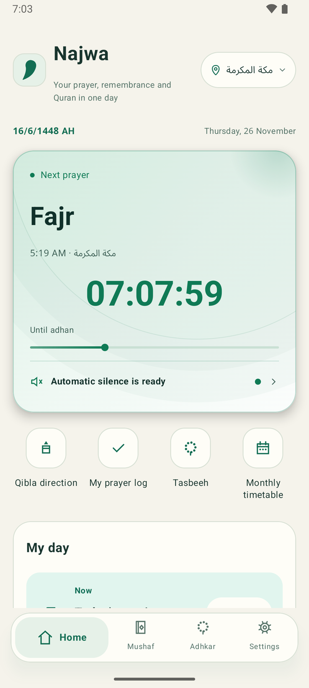
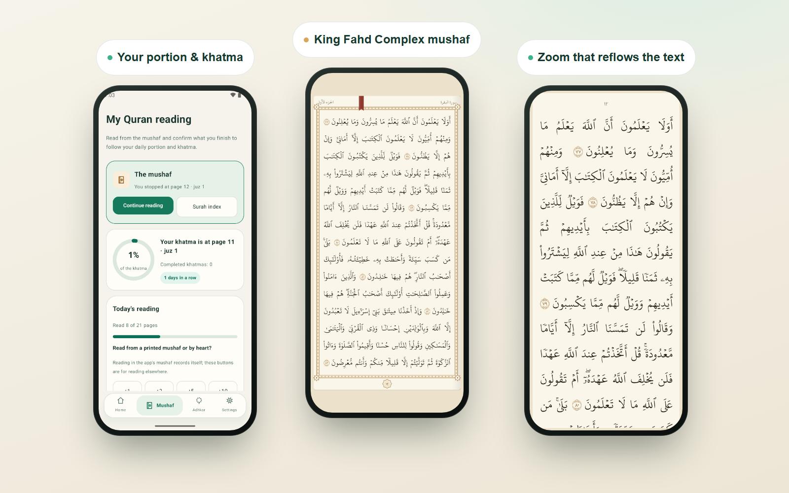
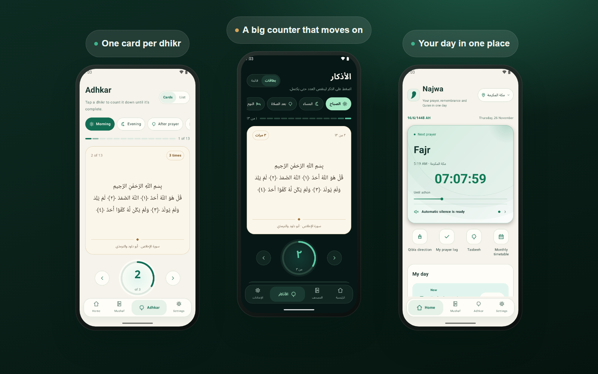
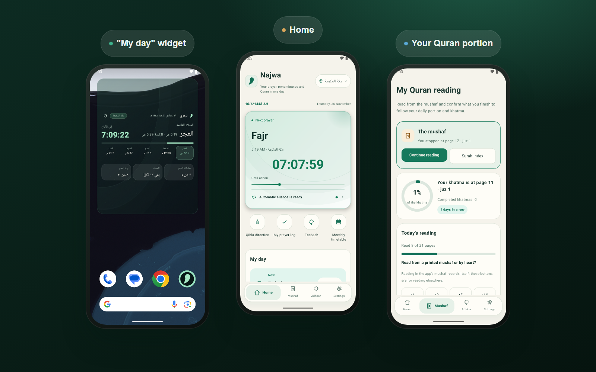

King Fahd Complex mushaf
The Complex's Quran text and script (Hafs) on pages that match the Madinah mushaf. Zoom enlarges the text itself, which reflows.
Najwa 1.7.0 · your companion through the day of prayer
Accurate times with adhan and iqama right on time, a King Fahd Complex mushaf whose text grows and flows, adhkar on cards with a counter, and silence that gives your ringer back. All on your phone, without the internet.
Direct download · Android 8.0 or later · free and open source

New in 1.7.0
The mushaf and adhkar now live in the bottom bar, and “My day” brings your prayer, remembrance and Quran to the home screen.
The Complex's Quran text and script (Hafs) on pages that match the Madinah mushaf. Zoom enlarges the text itself, which reflows.
One card per dhikr in a clear naskh, with a large ring counter that moves on to the next dhikr by itself. The list stays for those who prefer it.
The next prayer, the prayers you recorded, the adhkar of the moment and your portion in one card, with 0–100% transparency.
Four tabs: Home, Mushaf, Adhkar and Settings. Silence lives in Settings, and the tools sit in one row on Home.
The Najwa experience
Real screenshots, exactly as you will see the app on your phone.
The next prayer with a clear countdown and a bar that fills as it approaches, with silence status in the same card. Light or dark, as you like.
604 matching pages of fifteen even lines, with verse ornaments from the Complex's font. Pinch or double‑tap and the text grows and flows; continue your khatma and daily portion from where you stopped. The text and font belong to the King Fahd Glorious Quran Printing Complex and are used with its permission.

One card per dhikr, turned like pages, and a large ring counter: tap the card or the counter to count, and it moves on when you finish. Morning, evening, after‑prayer, sleep, waking and mosque adhkar from Hisn al‑Muslim.

The “My day” widget shows the next prayer and its countdown, today's times with a mark under each prayer you recorded, then your prayers, the adhkar of the moment and your portion.

The widget changes colour and wording at every stage, then moves on to the next adhan once the prayer time you set has passed.

The prayer, the adhan and iqama times, your city and a live countdown to iqama. Tap Stop adhan to silence the sound and keep the countdown.

Privacy and transparency
Najwa does not request the internet permission at all, so it cannot send anything to any server. No accounts, no ads, no analytics or tracking, and Android's automatic backup is turned off.
Settings, a small technical log for restoring the ringer, your worship records if you use them (prayers and qada, reading, khatma and bookmarks, adhkar and tasbeeh progress) and a private copy of an adhan you pick.
A backup file you save wherever you like (optionally encrypted with a password, AES‑256‑GCM), what you share yourself, an email you review and send, and App linking if you turn it on (off by default).
The counter is built in, but its 17 rules await review by a qualified scholar, so no reward figure is shown in the official release. Once approved, it remains a hope, not a reckoning.
| Permission | Why |
|---|---|
| Notifications | Show adhan, iqama and reminders, and the live iqama countdown in the status bar on Android 16. |
| Exact alarms | Adhan and silence exactly on time. |
| Do Not Disturb access and audio settings | Silence the phone during prayer and restore it as it was. |
| Start after reboot | Reschedule alerts after a restart. |
| Foreground service and media playback | Play the adhan and keep silence until it ends. |
| Vibration | With alerts and when counting adhkar. |
| Approximate location | Only once, when you tap Find my city or use my current location on the Qibla page; only the city is kept. |
Najwa does not ask for internet, contacts, photos or general file access, microphone or camera, or background location. Since 1.3.0 only four permissions were added (approximate location, media playback, promoted notifications and vibration), and none in 1.7. The full policy is in the app: Settings → App information → Privacy policy.
A calm start
A few short steps, so it works the way you like.
العربية · English · Bahasa Indonesia
اردو · বাংলা · हिन्दी · Türkçe
Download the APK and install it. Allow installs from your browser if Android asks. It updates the previous version and keeps your settings.
Confirm your city or pick it from more than 459,000 places, then choose the calculation method and Asr rule.
Turn on adhan, iqama, Friday and auto-silence, and grant only the permissions you need.
Add the “My day” widget from Settings → Widgets, then set its transparency and your mosque's iqama and silence times.
Room for stillness, every day
Version 1.7.0 · build 118 · signed APK, 19.4 MiB
SHA-256 of this release's APK:
82c53b00bf0c7a8d8e254d98f75f05ab458f313e1700f40471beecfc54289ae0Release page and downloads · GitHub checks · Full release notes
Najwa's code is open under Apache 2.0: read it, change it and help improve it. The Quran text and font remain the property of the King Fahd Glorious Quran Printing Complex and are used with its permission.
Contribute to Najwa on GitHub ↗Adhkar from Hisn al‑Muslim. Surah data from the Tanzil project; places from GeoNames. Times are calculated; check them against your local calendar. Iqama follows your setting and is not an official mosque time.